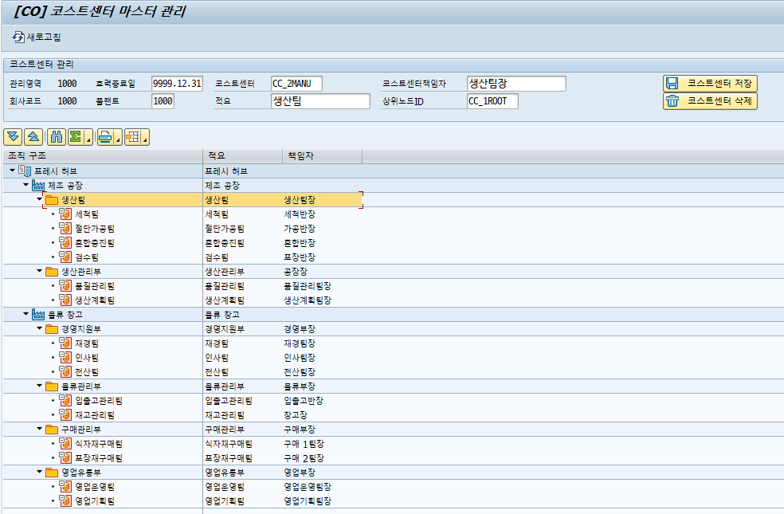
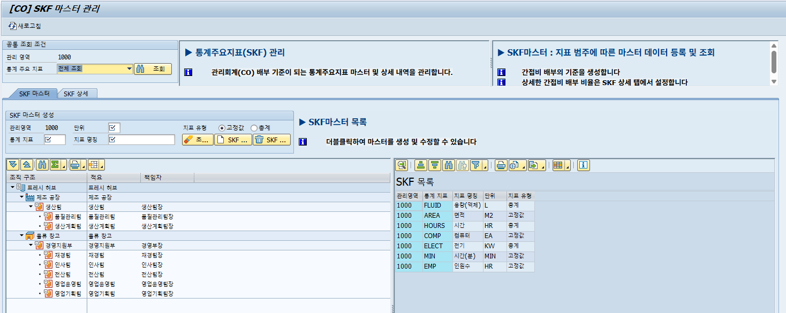
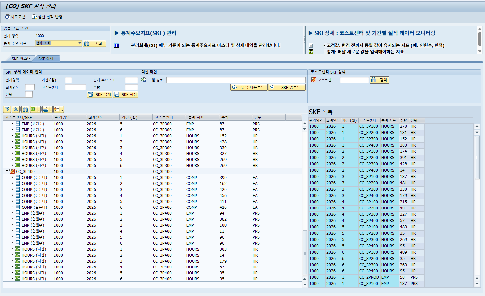
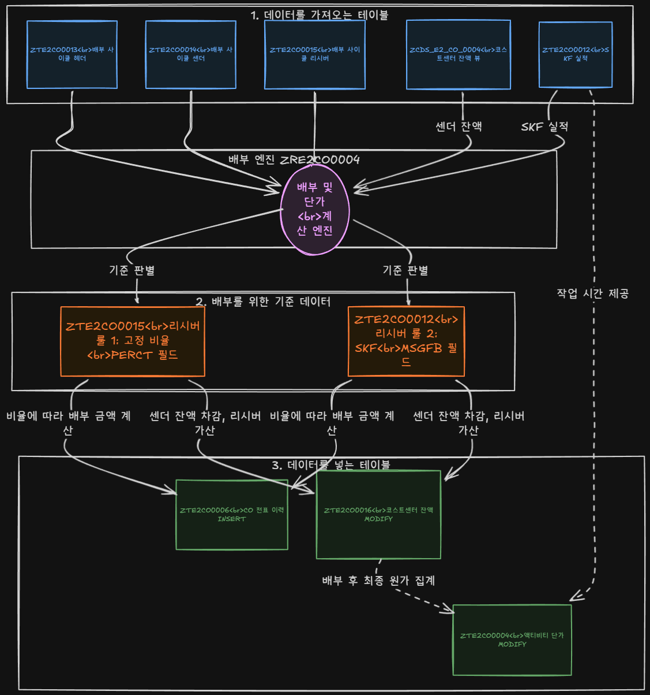
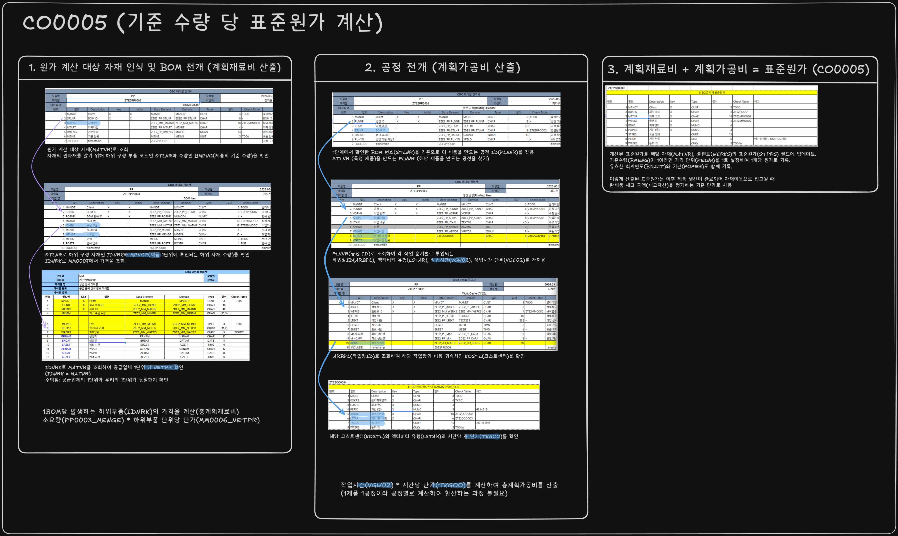
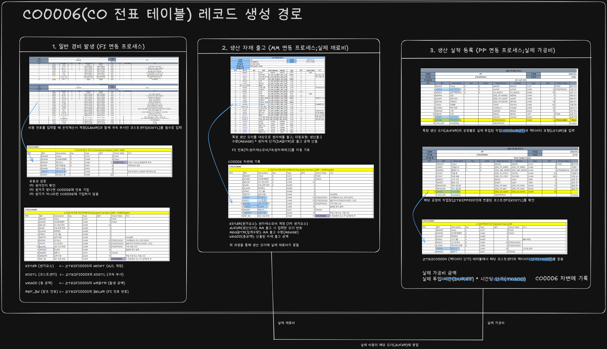
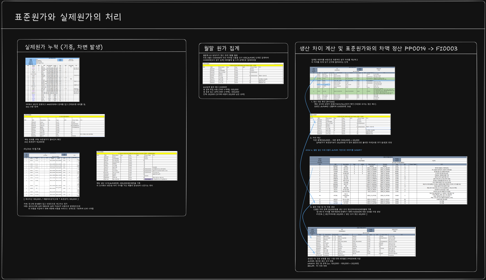
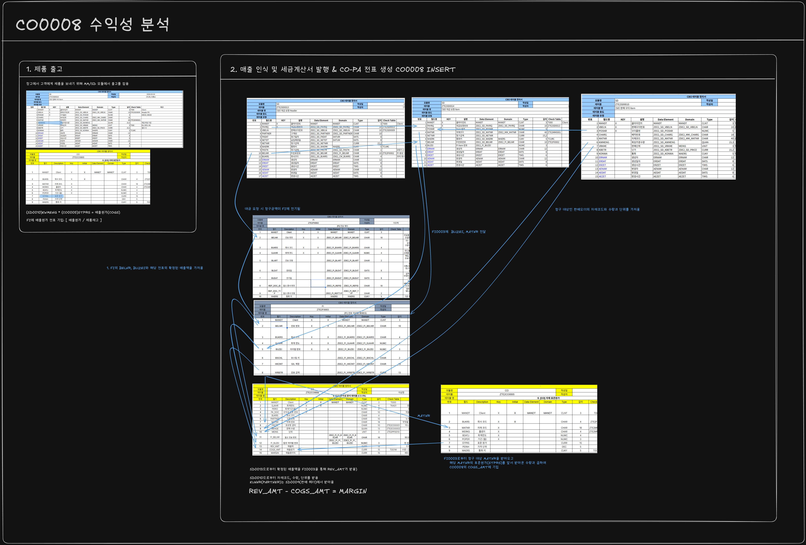

About Me
사용자 중심의 웹 애플리케이션을 개발하는 프론트엔드 개발자 이상현입니다. 깔끔하고 재사용 가능한 코드 작성과 모던 웹 기술(React, Vue 등)을 활용한 UI/UX 구현에 강점이 있습니다. SAP Fiori와 같은 엔터프라이즈 UX 패턴에도 관심이 많습니다.
- 이름: 이상현
- 이메일: alalyson1@gmail.com
- 연락처: 010-7276-9787
- 학력: 인하대학교 경영학과 졸업
- 위치: 대한민국 서울
Certificates & Languages
자격증 (Certificates)
- 2026.06.17 ABAP Certification
어학성적 (Languages)
- 2026.06 OPIC (IM2)
Skills
SAP & Tech Stack
Modules & Tools
Experience
담당 모듈: FI (재무회계), CO (관리회계)
기업 재무 및 관리 회계 프로세스 분석 및 모듈 설계, 결산 속도 향상을 위한 핵심 프로그램
및 CDS View 개발.
Projects - F&B 식자재 유통 ERP 시스템 구축
코스트센터 마스터 관리
T-Code: SAPMZE2CO0001
산재되어 있던 원가 중심점 데이터를 체계화하여 정확한 원가 배부의 기반을 마련한 프로그램입니다.
상세 보기 ▼

개요 및 성과
- 산재되어 있던 원가 중심점 데이터를 체계화
- 정확한 원가 배부의 기반을 마련함
로직 설명
SKF 생성 및 마스터 관리
T-Code: SAPMZE2CO0003
통계 주요 지표(SKF) 데이터를 관리하고 원가 배부 기준을 명확히 설정하는 프로그램입니다.
상세 보기 ▼


개요 및 성과
- 통계 주요 지표(SKF) 데이터 체계화
- 원가 배부의 정확성 및 투명성 향상
로직 설명
CO 배부 사이클 자동화 프로그램
T-Code: ZRE2CO0005
여러 부서에서 발생하는 공통 비용을 각 코스트센터로 배부하는 로직을 자동화하여 결산 시간을 단축했습니다.
상세 보기 ▼





개요 및 성과
- 여러 부서에서 발생하는 공통 비용을 각 코스트센터로 배부하는 로직 자동화
- 복잡한 배부 데이터 흐름 분석 및 화면 설계
- 다수의 CDS View(ZCDS_E2_CO_0003/0004/0005)를 활용하여 조회 성능 대폭 개선
로직 설명
자금 및 채권 관리 효율화
T-Code: ZRE2FI0003 (입금 내역 업로드), ZRE2FI0005 (매출채권 반제)
수기 대사 작업을 자동화하여 월말 결산 시간을 단축하고 휴먼 에러를 방지했습니다.
상세 보기 ▼
개요 및 성과
- 수기 대사 작업의 자동화
- 월말 결산 시간 단축 및 휴먼 에러 방지
로직 설명
고정자산 관리 고도화
T-Code: ZRE2FI0008 (감가상각 배치), ZRE2FI0009 (고정자산 조회)
ZCDS_E2_FI_0009 CDS View를 활용해 대량 자산 데이터의 빠른 조회를 구현했습니다.
상세 보기 ▼
개요 및 성과
- ZCDS_E2_FI_0009 CDS View를 활용해 대량 자산 데이터의 빠른 조회 구현
로직 설명
전표 처리 공통화 및 무결성 확보
T-Code: ZRE2FI0001 (전표 조회/역분개), ZCL_E2_FI_POSTING (글로벌 공통 클래스)
타 모듈(SD, MM, PP 등)에서 재무 전표를 일관성 있게 생성할 수 있도록 공통 클래스를 구현하여 개발 생산성을 증대시켰습니다.
상세 보기 ▼
개요 및 성과
- 타 모듈(SD, MM, PP 등)에서 재무 전표를 일관성 있게 생성할 수 있도록 공통 클래스 구현
- 팀 전체의 개발 생산성 및 코드 재사용성 증대
로직 설명
Contact
프로젝트 문의나 협업 제안은 언제든지 환영합니다.